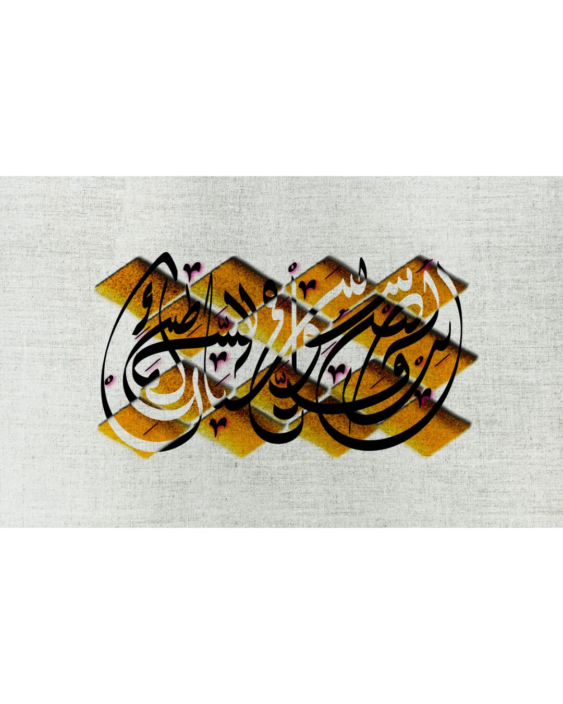
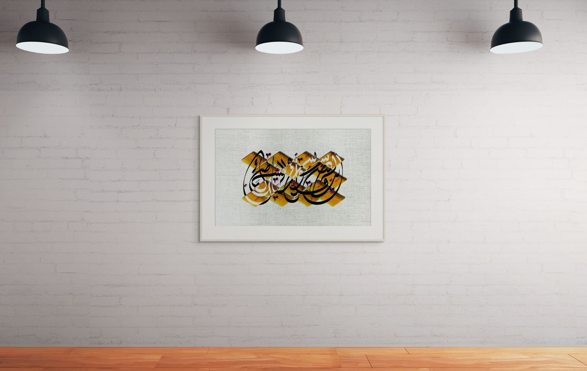
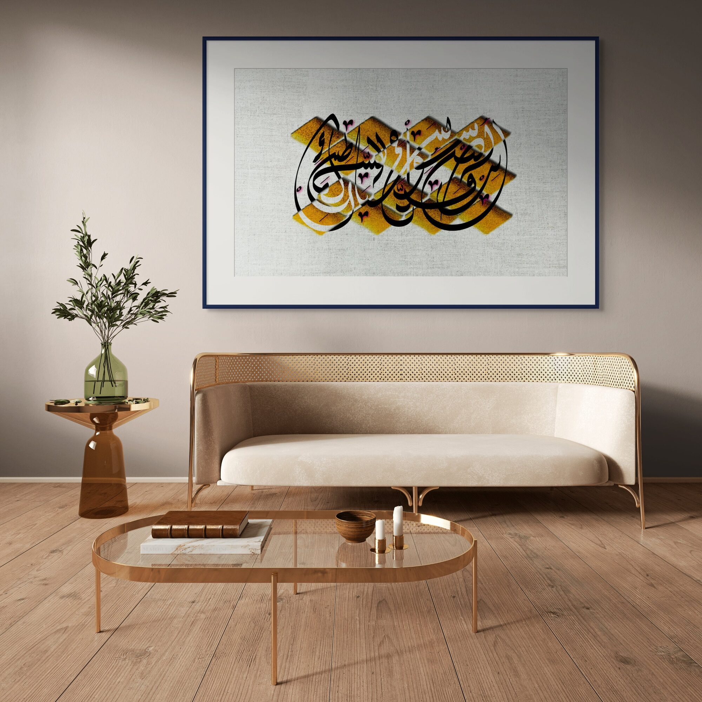
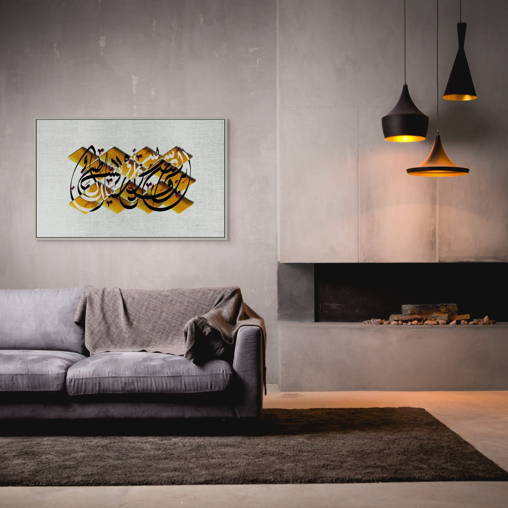
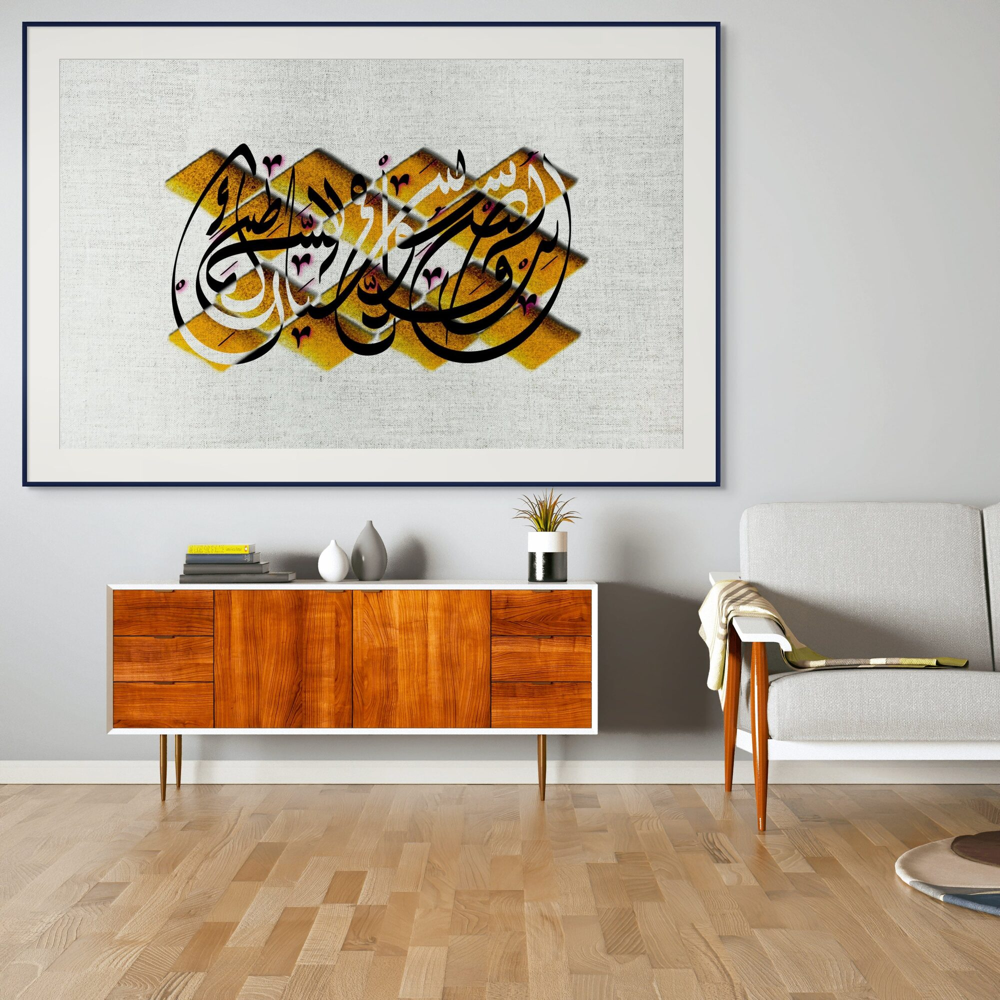

رهباني قدّسوا في السماء شياطينك
My monks have hallowed in heaven your demons.
صلاة · Prayer

This poem arrives dressed as devotion and reveals itself as desire. The speaker's monks do not pray to God — they pray to the beloved, sanctifying even her demons, finding the sacred inside what should be transgressive. The final lines collapse the distance between prayer and longing entirely: her image appears not in dreams but during the recitation of her own name as prayer.
Within the Lebanon Collection, this piece occupies a specific place: Lebanon too is loved this way — with full knowledge of its darkness, with monks who have long since redirected their prayers toward something that does not deserve them and cannot stop receiving them.
The composition makes visible what Arabic reading usually moves past without seeing: the diacritical points — the small marks that distinguish letters, that carry meaning, that most eyes skip over — are pulled from the script and rendered as solid gold geometric forms beneath it. What anchors the piece is not decoration but punctuation. The smallest unit of linguistic meaning becomes the largest visual presence. The script floats above what it depends on.




Ask about صلاة
Editions are small and made after the conversation. Tell me the format you have in mind and the wall it is going to.
Enquire about this work